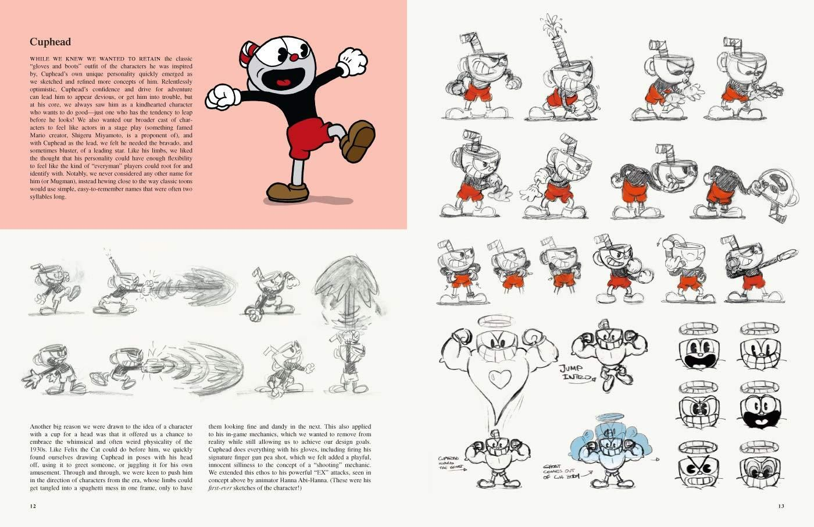

¿En qué consiste el estilo Rubber Hose?
El estilo rubber hose (manguera de goma) fue la primera técnica estandarizada de la industria de la animación estadounidense durante las décadas de 1920 y 1930. Su rasgo distintivo radica en dibujar las extremidades de los personajes como curvas continuas y flexibles, sin articulaciones rígidas como codos o rodillas, lo que permite movimientos exagerados, elásticos y llenos de dinamismo surrealista (Barrier, 2003).
Estudios pioneros como Fleischer Studios —responsables de clásicos como Betty Boop y Popeye— popularizaron estas convenciones gráficas junto con los ojos con corte triangular (pie eyes), guantes blancos de tres líneas y escenarios donde objetos cotidianos cobran vida al compás de la música. Studio MDHR adoptó estas mismas reglas visuales para diseñar a cada jefe, enemigo y escenario del videojuego Cuphead (Webster, 2017).

Proceso técnico: Del lápiz y papel al motor Unity
Para garantizar una autenticidad visual absoluta, los artistas evitaron dibujar directamente en tabletas digitales. El flujo de producción consistió en bocetar cada postura con lápiz sobre hojas perforadas de animación, entintar los contornos definitivos con pluma estilográfica y escanear cada lámina a alta resolución para aplicar el color digitalmente respetando las paletas cromáticas históricas de los años treinta (Moldenhauer, 2017).
Por su parte, todos los fondos de los niveles y combates fueron pintados a mano utilizando acuarelas reales sobre papel de algodón. Dentro del motor gráfico Unity, los ingenieros integraron capas de desplazamiento paralaje, grano de película cinematográfica de 35 milímetros y sutiles aberraciones cromáticas que simulan la proyección de un celuloide antiguo sin afectar la visibilidad de los proyectiles durante el combate (Peña, 2018).